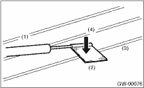
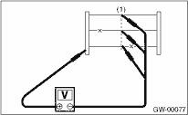

GLASS/WINDOWS/MIRRORS > Rear Window Defogger
CAUTION:
When wiping off the stain on glass with cloth, use a dry and soft cloth and move it in the direction of the heat wire extension to avoid damage to the heat wire.
1. Turn the ignition switch to ON.
2. Turn the defogger switch to ON.
3. Wrap the tips of tester probe with aluminum foil to avoid damage to heat wire.

|
(1) |
Tester probe |
|
(2) |
Aluminum foil |
|
(3) |
Heat wire |
|
(4) |
Press |
4. Measure the voltage at heat wire center (1) with DC voltmeter.
Standard voltage:
Approx. 6 V

|
(1) |
Center of heat wire |
|
Voltage |
Criteria |
|
Approx. 6 V |
Normal |
|
Approx. 12 V or 0 V |
Open |
NOTE:
• If the measured value is 12 V, the circuit is open between heat wire center and positive (+) terminal of tester probe.
• If it is 0 V, the circuit is open between heat wire center and ground.
5. Connect the tester probe of positive lead of voltmeter to positive terminal of heat wire and move tester probe of negative lead along the heat wire up to the negative terminal end. If voltage changes from zero to several volts during movement of tester probe, heat wire is open at the voltage change point.